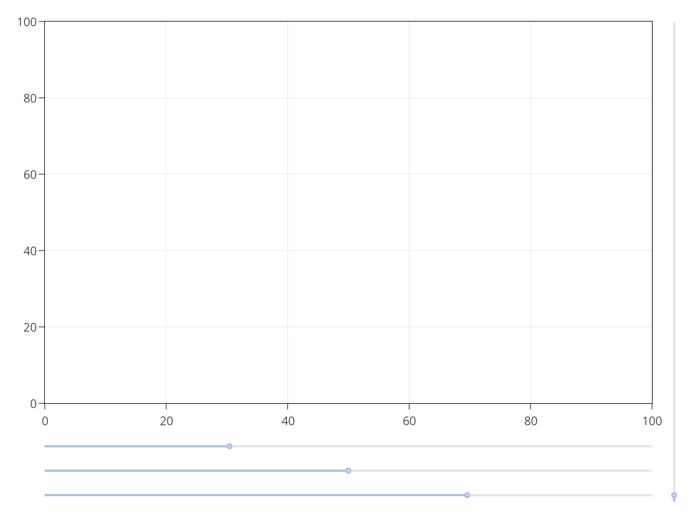
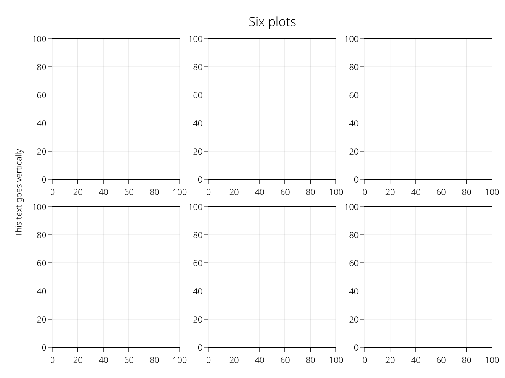
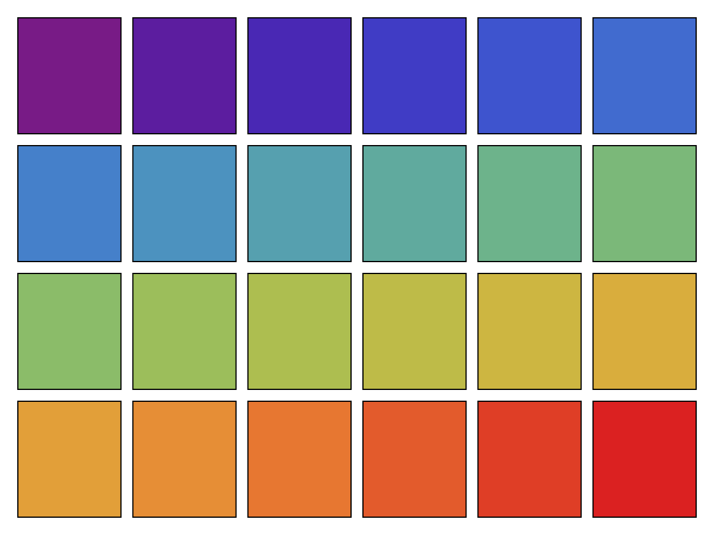
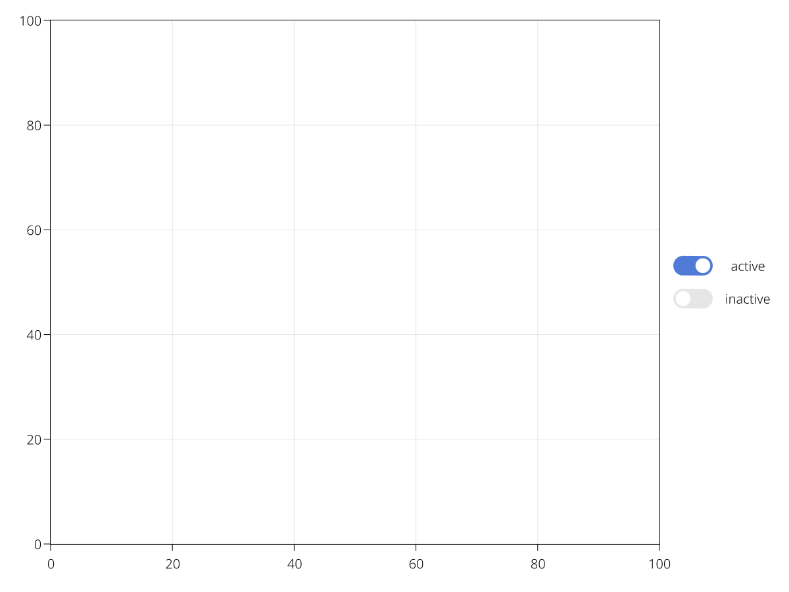
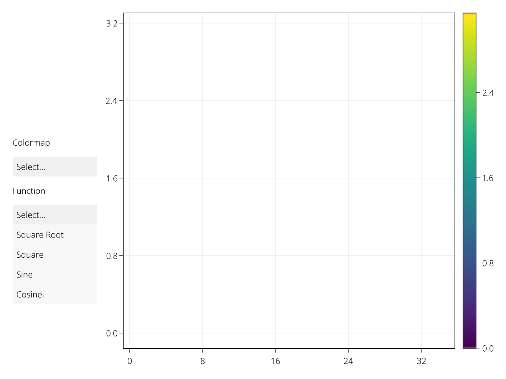

LSlider
A simple slider without a label. You can create a label using an LText object, for example. You need to specify a range that constrains the slider's possible values. You can then lift the value observable to make interactive plots.
using AbstractPlotting
using MakieLayout
scene, layout = layoutscene(resolution = (1200, 900))
ax = layout[1, 1] = LAxis(scene)
sl1 = layout[2, 1] = LSlider(scene, range = 0:0.01:10, startvalue = 3)
sl2 = layout[3, 1] = LSlider(scene, range = 0:0.01:10, startvalue = 5)
sl3 = layout[4, 1] = LSlider(scene, range = 0:0.01:10, startvalue = 7)
sl4 = layout[:, 2] = LSlider(scene, range = 0:0.01:10, horizontal = false,
tellwidth = true, height = nothing, width = Auto())
If you want to programmatically move the slider, use the function set_close_to!(ls::LSlider, value). Don't manipulate the value attribute directly, as there is no guarantee that this value exists in the range underlying the slider, and the slider's displayed value would not change anyway by changing the slider's output.
LText
This is just normal text, except it's also layoutable. A text's size is known, so rows and columns in a GridLayout can shrink to the appropriate width or height.
using AbstractPlotting
using MakieLayout
scene, layout = layoutscene(resolution = (1200, 900))
axs = layout[1:2, 1:3] = [LAxis(scene) for _ in 1:6]
supertitle = layout[0, :] = LText(scene, "Six plots", textsize = 30)
sideinfo = layout[2:3, 0] = LText(scene, "This text goes vertically", rotation = pi/2)
LButton
using AbstractPlotting
using MakieLayout
scene, layout = layoutscene(resolution = (1200, 900))
layout[1, 1] = LAxis(scene)
layout[2, 1] = buttongrid = GridLayout(tellwidth = false)
buttongrid[1, 1:5] = [LButton(scene, label = "Button $i") for i in 1:5]
scene
LRect
A simple rectangle poly that is layoutable. This can be useful to make boxes for facet plots or when a rectangular placeholder is needed.
using AbstractPlotting
using MakieLayout
using ColorSchemes
scene, layout = layoutscene(resolution = (1200, 900))
rects = layout[1:4, 1:6] = [LRect(scene, color = c) for c in get.(Ref(ColorSchemes.rainbow), (0:23) ./ 23)]
LScene
If you need a normal Makie scene in a layout, for example for 3D plots, you have to use LScene right now. It's just a wrapper around the normal Scene that makes it layoutable. The underlying Scene is accessible via the scene field. You can plot into the LScene directly, though.
Currently you should pass a couple of attributes explicitly to make sure they are not inherited from the main scene (which has a pixel camera, e.g.).
using AbstractPlotting
using MakieLayout
scene, layout = layoutscene(resolution = (1200, 900))
lscene = layout[1, 1] = LScene(scene, camera = cam3d!, raw = false)
# now you can plot into lscene like you're used to
scatter!(lscene, randn(100, 3))LToggle
A toggle with an attribute active that can either be true or false, to enable or disable properties of an interactive plot.
using AbstractPlotting
using MakieLayout
scene, layout = layoutscene(resolution = (1200, 900))
ax = layout[1, 1] = LAxis(scene)
toggles = [LToggle(scene, active = ac) for ac in [true, false]]
labels = [LText(scene, lift(x -> x ? "active" : "inactive", t.active))
for t in toggles]
layout[1, 2] = grid!(hcat(toggles, labels), tellheight = false)
LMenu
A dropdown menu with options, where each element's label is determined with optionlabel(element) and the value with optionvalue(element). The attribute selection is set to the option value of an element when it is selected.
using AbstractPlotting
using MakieLayout
scene, layout = layoutscene(resolution = (1200, 900))
menu = LMenu(scene, options = ["viridis", "heat", "blues"])
funcs = [sqrt, x->x^2, sin, cos]
menu2 = LMenu(scene, options = zip(["Square Root", "Square", "Sine", "Cosine"], funcs))
layout[1, 1] = vbox!(
LText(scene, "Colormap", width = nothing),
menu,
LText(scene, "Function", width = nothing),
menu2;
tellheight = false, width = 200)
ax = layout[1, 2] = LAxis(scene)
func = Node{Any}(funcs[1])
ys = @lift($func.(0:0.3:10))
scat = scatter!(ax, ys, markersize = 10px, color = ys)
cb = layout[1, 3] = LColorbar(scene, scat, width = 30)
on(menu.selection) do s
scat.colormap = s
end
on(menu2.selection) do s
func[] = s
autolimits!(ax)
end
menu2.is_open = true
Deleting Layoutables
To remove axes, colorbars and other layoutables from their layout and the scene, use delete!(layoutable).